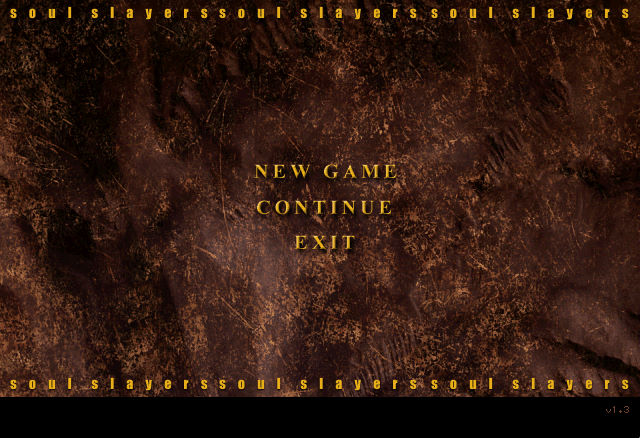
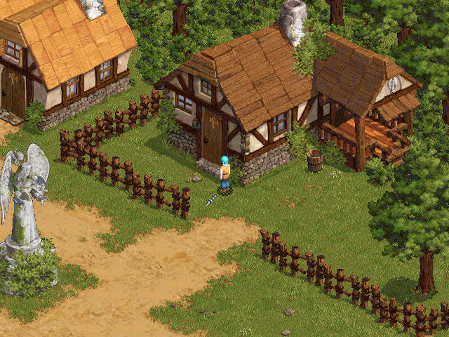
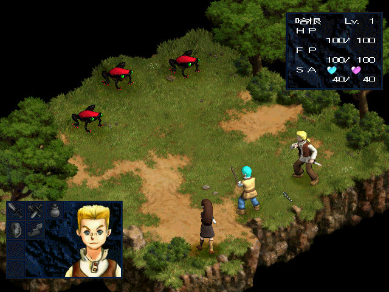

名稱：聖靈騎士 (Soul Slayers，中文版)
簡介：韓國Gleam 1997年出品的角色扮演遊戲，1999年由遊戲橘子中文化並代理發行，以3D
斜角畫面呈現，採團隊回合制方式戰鬥 [待補]。



保護：光碟
備註：繁中版為1.3版
操作：
滑鼠左鍵／方向鍵 = 移動（雙擊=跑步）
滑鼠右鍵／Enter = 動作（交談／開門／上下樓等，位置要夠近，方向也要對）
滑鼠左鍵（點選自己）／F1 = 功能選單
Esc = 取消
F9 = 顯示除錯資訊